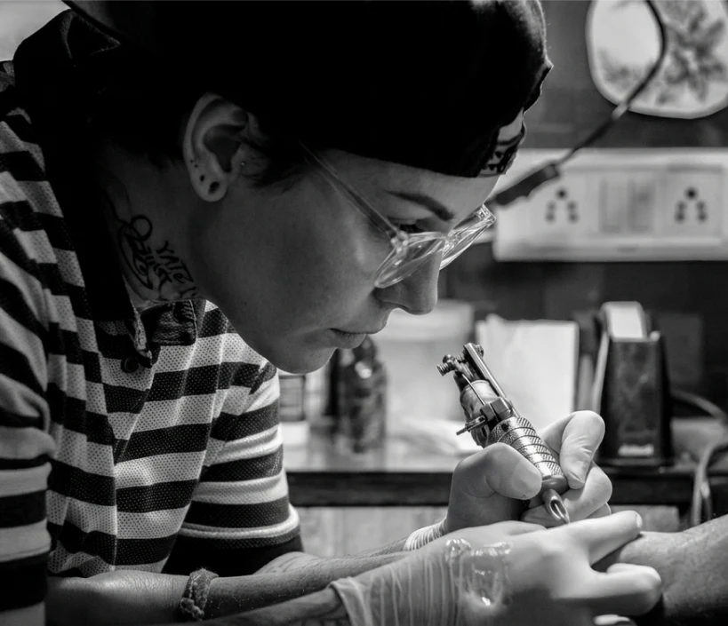

Arte autoral e tatuagem personalizada
O Blackline Tattoo Studio é um estúdio de tatuagem no Rio de Janeiro especializado em tatuagens personalizadas, com artistas experientes em diferentes estilos.
Agendar avaliação
O Blackline Tattoo Studio é um estúdio de tatuagem dedicado à criação de tatuagens autorais e personalizadas. Nosso time reúne tatuadores especializados em diferentes estilos, do fine line ao blackwork.
Cada trabalho é desenvolvido com atenção aos detalhes, respeito à ideia do cliente e compromisso com higiene e segurança.
Acreditamos que tatuagem é mais do que estética. É expressão pessoal.
É transformar ideias, memórias e símbolos em arte permanente.
Quero agendar uma avaliaçãoConheça alguns estilos de tatuagem realizados no Blackline Tattoo Studio. Trabalhamos com diferentes técnicas para criar tatuagens únicas e personalizadas.
Escolha o estilo de tatuagem, converse com um de nossos artistas e agende sua sessão no estúdio. Cada tatuagem é planejada de forma personalizada para garantir um resultado único.
Agendar tatuagemEntre em contato com o Blackline Tattoo Studio para tirar dúvidas, enviar referências ou agendar uma avaliação. Nosso estúdio atende com horário marcado.